My Projects
What Am I Working On Right Now?
Currently Reading:
Programming the ESP32 in C using the Espressif IDF - Harry Fairhead
Active Projects:
- Designing a custom PCB for a 10W-175W speaker amplifier.
- Developing a PCB module integrated into air filters for automated 6-week maintenance reminders.
- Experimenting with small-scale ESP32 applications and embedded C drivers.
RISCV Project
April 28, 2026
Language
System Verilog, C
Hardware
AMD Blackboard - FPGA and Processor
Description
A RISCV processor design focused strictly on hardware implementation.
The design uses the AMD Blackboard for the FPGA and features a
5-stage pipeline: Fetch, Decode, Execute, Memory, and Write Back.
It successfully operates on a 100MHz clock with no stepping down.
BeeMS (Battery Monitoring System)
April 24, 2026
Team Members
George Boone, Khai Nguyen, Roman Rattanakone, Zakir Muqueet, Jayde Brown
Description
Developed and tested a custom Battery Monitoring System for an electric racecar as part of a Formula SAE team senior design project. The project involved working with freeRTOS, implementing cell balancing, learning to use KiCAD for PCB design, and designing components with Fusion 360.
Reports
BMS_CpE_conclusions.pdf
Demo Day Video
Analog LED Controller
January 2026
Hardware
Resistors, capacitors, BJTs, and op amps.
Description
An analog LED strip controller built using only op amps and BJTs
without any ICs or microcontrollers. It features a PWM generator
using a circuit that creates a triangle wave compared against the
output of a 4-bit DAC. It also utilizes three 4-bit registers made
using just BJTs to store values for R, G, and B that feed into the DAC.
Videos
Automated Guitar Tuner
December 3, 2025
Language
Embedded C
Hardware
STM32F446RE Nucleo Board - single-board STM32 microcontroller
MW063002-2 - Omnidirectional Electret Microphone
LM358 - Op Amp
N754410 - H-Bridge motor driver
NEMA 17 - Stepper Motor
Team Member(s)
Jordan Pinson
Description
The goal of this project was to make a guitar tuner that would
automatically drive the tuning pegs of a guitar using the
STM32F446RE Nucleo Board. The project used a basic 2 pin
mocrophone to capture the guitar being strum. The sound was
fed into an op amp to give it some gain and center it on the ADC
of STM32. In the software, the ADC would be sampled at a rate of
2048 Hz, stored in blocks of 2048 samples, and those samples were
fed into an FFT using a Cooley-Tukey Algorithm. The peak of the
FFT would tell us what our fundamental frequency is (occasionally
the second fundamental). The goal was originally to make a full
PID to determine how many step for the motor to take but
unfortunately, everything before this took up most of the time.
We had to cut is it down to just the proportional part of PID.
The delta of the current pitch and the target pitch was scaled
to the number of steps for the motor to take and the direction.
If there were any steps to take, a state machine would drive
the motor and thus the tuning peg.
More details and images can be found here:
Project Report
I2C Module
December 2, 2025
Language
System Verilog, C
Hardware
AMD Blackboard - FPGA and Processor
MCP23S08 - GPIO Expander(I2C device for testing)
Description
The goal of the project was to make an I2C module that could be interfaced using a
AXI bus. The I2C module was designed to follow the standard for I2C protocol with the
flexibillty of communication with simple or complex I2C devices (complex being devices
with multiple registers). The module is interfaced using the AXI bus that connects the
processor and the FPGA. Lastly, we created the drivers for the I2C module such that any
program capable of reading and writing to a file can access and control the module.
More details and images can be found here:
Project Report
IR Transmitter/Reciever
December 3, 2025
Language
Embedded C
Description
This was one of my favorite projects because I was able to flex
my electronics knowledge. The project was to make an embedded
system using the EK-TM4C123GXL with an IR emmiter and reciever.
The project used the NEC Infrared Transmission Protocol for
transmissions and was tested with a TV at UTA. Multiple interupts
were used as different threads to run things almost in parallel.
Main was used for the Command line interface using UART to control
transmissions. In the command line, a user could load two bytes
into the transmission buffer for another thread to transmit. The
user could also check if the most recent transmission received if
any. There were also some debug commands such as manually turning
emiiter on and off or adjusting the brightness. On a seperate
thread, if there is data in the transmission buffer, a timer on an
interrupt would change the state of the emmiter (ON/OFF) using
a state machine. The last thread used a
GPIO interrupt and would use a wide timer
to get the time since the last GPIO interrupt and determine if
the time matched a start bit, a '1', or a '0' of the NEC protocol.
The part I'm proudest of is the hardware. Emitter required a
38kHz PWM when ON so the best solution was an 'AND gate' with GPIO
for ON/OFF and the PWM. Most people used a AND gate IC to handle that
but the emmiter reqired more current than what the IC could put out.
Everyone else used two BJTs as a low side switches to act as the AND
gate. They did however forget how BJTs worked and used some resistors
in the kilo ohms for the base of the BJT and severly limitted thier
current. I however used the formual Ib = Ic/Beta to use a more appropiate
resisitor. I was the only person who did not need to be inches from the
TV to send a command. The furthest I got was about 15 feet from the TV.
The curcuit used is shown below
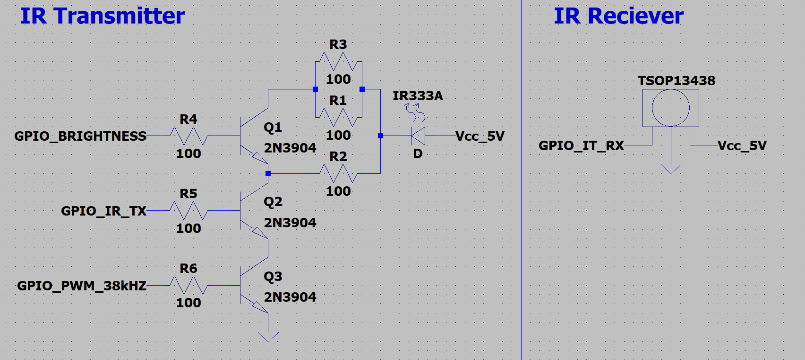
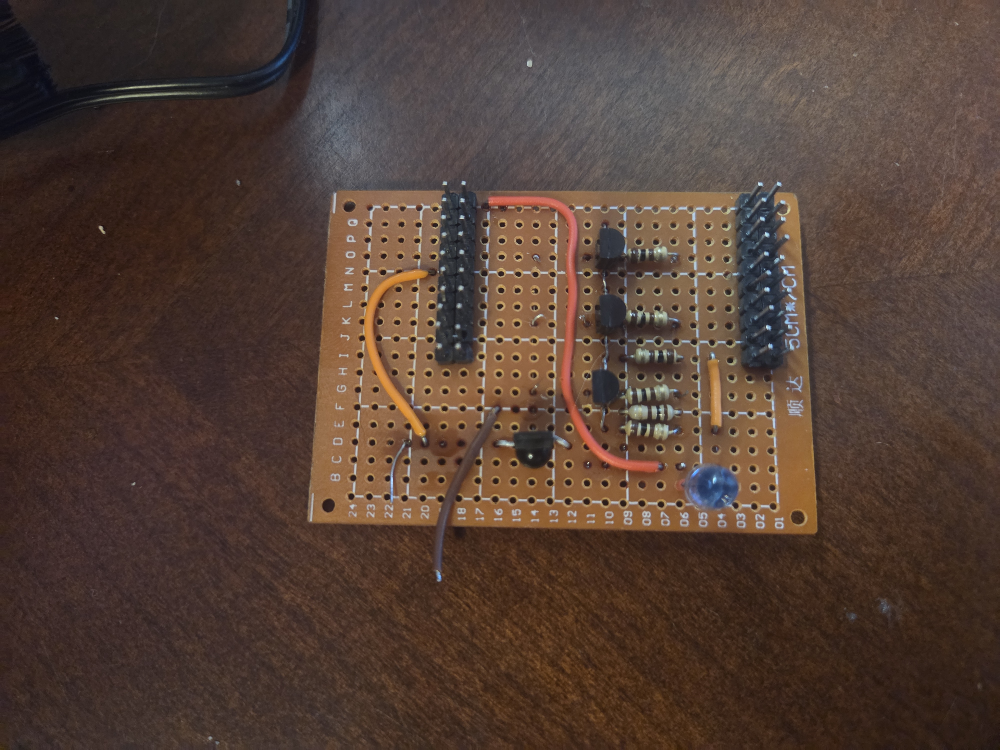
Mechatronics
Fall 2025
Team Members
Jordan Pinson
Hardware
TM4C123GH6PM Microcontroller, LIDAR Module (UART), Strain Gauges (Full-bridge/Half-bridge), Thermocouples, LC Sensors, Brushless DC (BLDC) Motors, Permanent Magnet DC (PMDC) Motors, Stepper Motors, Solenoids, Flyback Zener Diodes (1N5819, 1N5913), MOSFETs, Hall Effect Sensors, Optical Sensors, LEDs, and Oscilloscopes.
Description
A comprehensive collection of mechatronics labs and mini-projects exploring the integration of hardware and software control systems. These projects utilize a TM4C123GH6PM microcontroller to interface with a variety of analog and digital sensors, control multiple motor types, and parse physical data ranging from temperature to spatial mapping.
Lab 01: Solenoid and Back-EMF
Explored the effects of back-EMF voltage spikes generated by a solenoid and tested various flyback zener diode configurations (such as 1N5819 and 1N5913) to mitigate damage. The system was ultimately controlled using a TM4C123GH6PM driving a MOSFET.
Lab 01 Report
Lab 02: Stepper Motor
Calculated holding torque based on varying voltages and demonstrated step control by driving the stepper motor coils using a TM4C123GH6PM.
Lab 02 Report
Lab 03: PMDC with Back-Emf Speed Sensing
Controlled a PMDC motor utilizing a PWM signal and measured its RPM by comparing data from an optical sensor and back-EMF voltage calculations.
Lab 03 Report
Lab 04: BLDC Motor
Operated a Brushless DC (BLDC) motor directly and via a TM4C123GH6PM microcontroller, utilizing Hall effect sensors to accurately determine the coil activation sequences.
Lab 04 Report
Lab 05: LC Sensor Measurement
Designed and tested an LC sensor for dual applications: measuring liquid volume levels in milliliters and functioning as a metal detector with frequency-based LED color indicators.
Lab 05 Report
Lab 06: Thermocouple Measurements
Implemented lookup tables and interpolation in C to calibrate a thermocouple, successfully recording extreme temperatures from dry ice (-73.1°C) to a hot soldering iron (101.1°C).
Lab 06 Report
Lab 07: Strain Gauge Measurements
Calibrated a strain gauge using known masses to measure force in Newtons and identified structural fixes for axial strain interference using full-bridge or half-bridge configurations.
Lab 07 Report
Lab 08: LIDAR
Interfaced a LIDAR module using UART to scan a physical space, storing and sorting the collected angle and distance data to calculate the total scanned area.
Lab 08 Report
8-Bit Two Function Calculator
December 15, 2024
Language
System Verilog
Hardware
DE10-Lite - Altera FPGA
Description
The project was the use Verilog to create an 8-Bit Two Function
Calculator. The project consisted of 4 main modules: an
Arithmetic Unit (AU), a Input Unit (IU), an Output Unit (OU) and
a Control Unit (CU).
The AU is capable of addition and subtraction. For addition, full adders
with carry outs linked accross were used. For Subtraction, the carry in
for the first full adder was set to '1' and a hald adder adjusts the subtrahend.
The IU uses a 4x4 keyboard and the IU scan the rows and colombs to determine
which key is seleted. The OU uses a barrel shifter to convert from binary to
BCD which is then converted to a format for a seven segment display. The display
has a common cathode so the 4 values are stored in registers and they are cycled
through and every display is being turned on one at a time really quick to
give the appearance that they are all on. The CU uses a state machine to
drive where we are in the operation. The module implementations are in the
report in more detail.
Multiplexed Display
The frame rate of my camera was faster than the display was cycling throught the digits. Thought it was interesting.
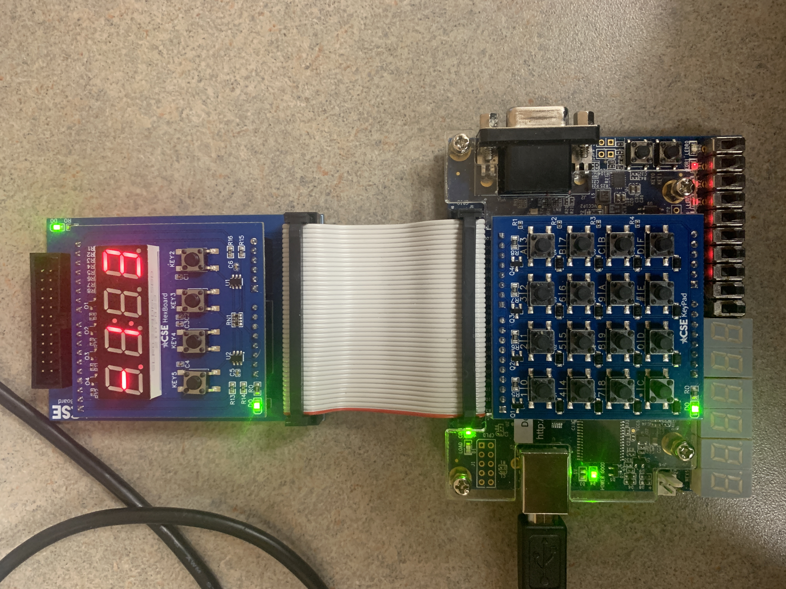
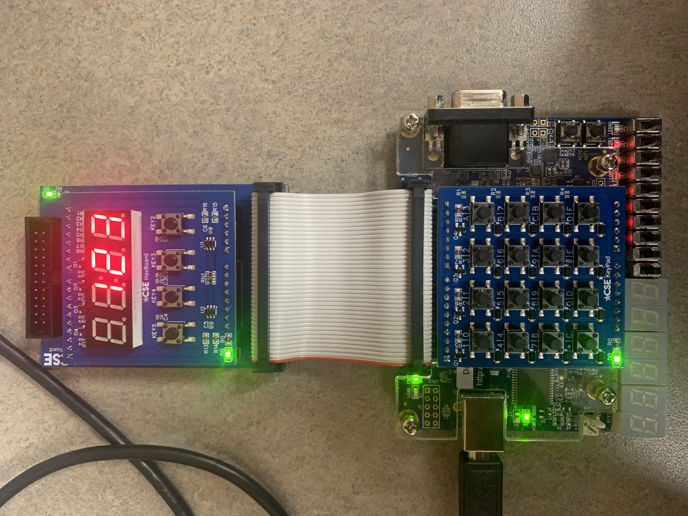
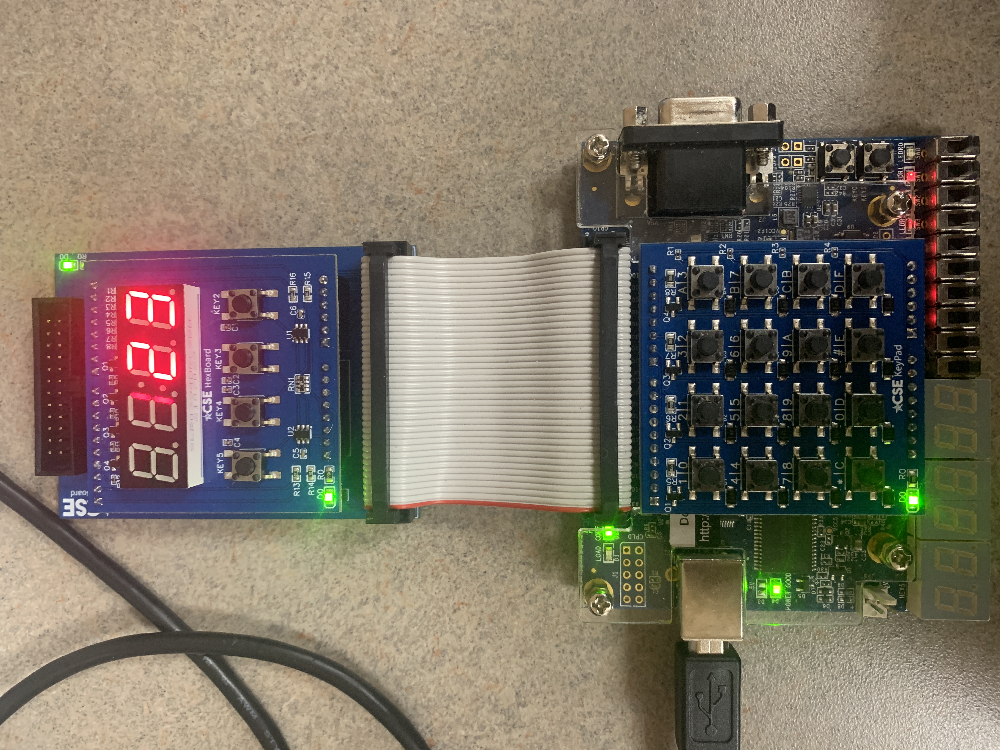
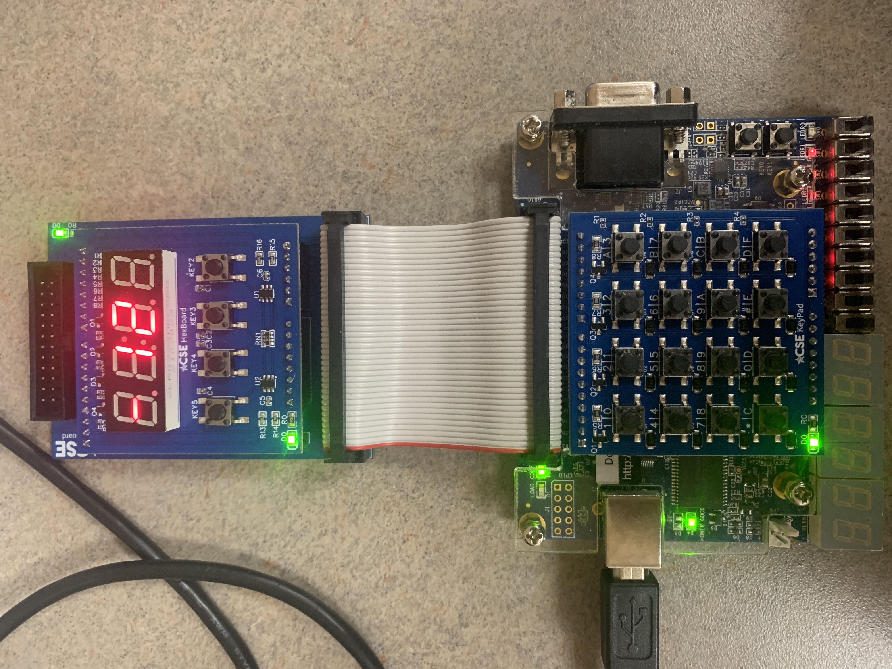
More details and images can be found here:
Project Report
8-Bit Two Function Calculator (Minecraft)
December 15, 2024
Description
This was a fun project I did while taking digital logic at UTA.
As we completed labs on the Altera board, I would go into this
Minecraft world and try to recreate the lab that week. Each lab is
labeled accordingly with signs. The goal was to complete the final
project, the calculator, using nothing but redstone. No command blocks
or mods. The project was difficult because as a multiplexer in Verilog
is just a couple of case statements, it was 8 or 16 AND gates depending
on the inputs. The hardest parts were the barrel shifter and the BCD
to binary converter. The barrel shifter was difficult just because
of the sheer size of it. The converter was difficult the second digit
had to be multiplied by 10 and the third by 100. In Verilog, we just
used the multiplication operator which does not exist in Minecraft. I
figured out I could use a matrix of AND gates and add all the rows together
using a bunch of full adders just like you would if you were
multiplying by hand and that worked. Despite the difficulties,
I did complete the calculator. It's a little slow but that's just
because Minecraft operates at 20 ticks a second and every gate takes
about 1-2 ticks. There are some optimizations I could have made but I
wanted to stay as close to source material as possible.
Game Boy Advance Repair
January 26, 2024
A while ago I found a Game Boy Advance (GBA) in a poor condition. I grew up loving the GBA so I figured it would be fun side project to repair and refurbish it.
Initial GBA damage:
- Will not stay on for longer than a second.
- Screen would not turn on.
- heavy damage to shell
.jpg)
.jpg)
.jpg)
.jpg)
Ordered a new battery and shell.
GBA will now stay on but still no display
I took the GBA out of it's shell.
The ribbon cable that connects to the screen was loose so reattaching it fixed the issue. All that is left is to put the GBA into its new shell.
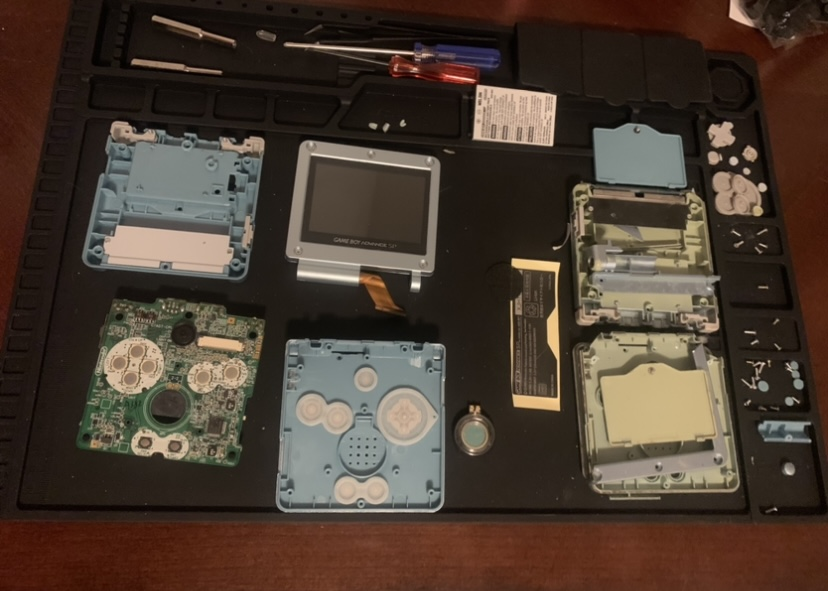
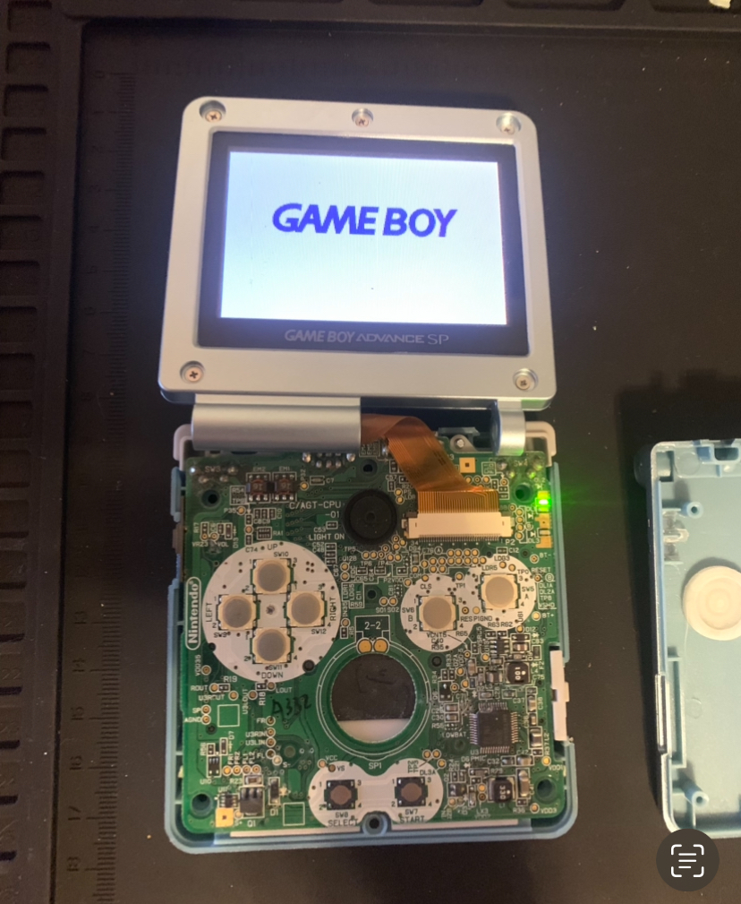
Finished!
- Game slot funtions.
- All buttons tested.
- Charging and link port tested.
- Sound and volume setting tested.
- Everything is in order.
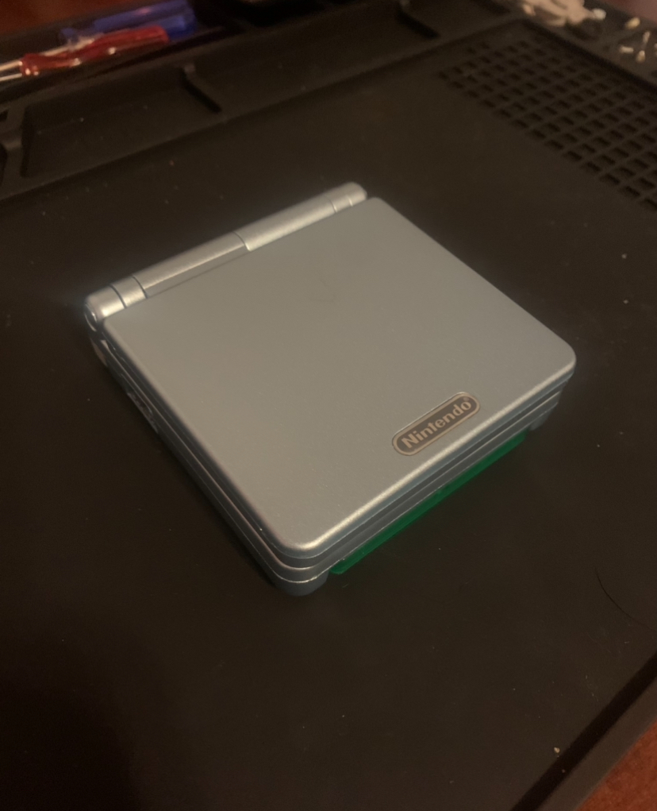
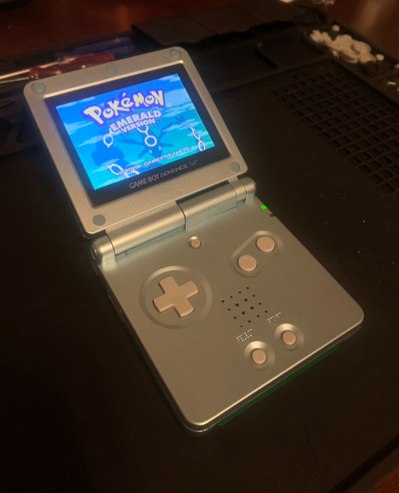
On The Tip Of My Tongue
November 28, 2023
Language
Java
Description
For my Object-Oriented Programming final project, I created an engaging and interactive game inspired by Wordle, incorporating different difficulty levels to enhance the player experience. The project was undertaken with minimal instructions, providing the freedom to explore creative solutions and apply various programming concepts.
Key Features
1. Gameplay Mechanics
- The game is structured with three difficulty levels - Easy, Medium, and Hard.
- Each difficulty level corresponds to a specific word length (5, 6, and 7 letters, respectively).
- Players are given a set number of guesses based on the difficulty level, adding a strategic element to the gameplay.
2. Graphical User Interface (GUI)
- The project utilizes the Swing library to create a user-friendly GUI.
- The GUI enhances the gaming experience by providing a visually appealing and intuitive interface.
3. File Handling
- A key aspect of the project involved working with text files to read word libraries for each difficulty level.
- This allowed for a dynamic and easily updatable system for word choices, adding an element of variety to the gameplay.
4. JPanel with Card Layout
- One of the standout features of the project is the implementation of a JPanel with a Card Layout.
- This layout efficiently manages multiple panels, facilitating seamless transitions between different menus within the game.
Challenges and Learnings
While the project was a success overall, it was not without its challenges. The choice of word libraries posed a significant challenge, with the 6-letter word list being too extensive and including obscure words, while the 7-letter word list was too limited, resulting in some common words being excluded.
Conclusion
The Wordle Challenge Game is a testament to the creativity and problem-solving skills applied in an object-oriented programming context. The use of GUI, file handling, and innovative layout management contribute to a polished and enjoyable gaming experience. The project showcases the ability to overcome challenges and highlights areas for potential improvements in future iterations.
Grade: 18/18
Music Matrix
2019
Language
C
Description
As a former music major delving into post-tonal theory, I developed a simple yet effective terminal-based program for analyzing 12-tone music using matrices. Inspired by the principles of post-tonal theory and matrix analysis, this program provides a straightforward tool for music theorists and composers interested in exploring this avant-garde style.
Key Features
1. Matrix Generation
The program takes a 12-tone series (the prime row) as input.
2. Matrix Display
It constructs and prints out the full matrix for analysis.
3. Chromatic Representation
Pitch values are represented in ascending chromatic order, starting from 'C' as 0 and incrementing by semitones. To maintain single-digit representations, 'T' stands for 10 (representing B♭/A#) and 'E' represents 11 (representing B natural).
Usage Example
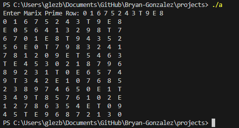
The program generates and displays the corresponding matrix for analysis.
Learn More
For those interested in learning more about matrices in post-tonal music theory further, consider reading about it on https://musictheory.pugetsound.edu/mt21c/section-194.html.